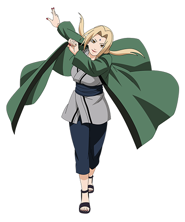

Tsunade senju
Godaime Hokage

- Biodata Tsunade
- Latar belakang
- Kemampuan yang dimiliki oleh tsunade senju
- Chakra yang sangat besar: Hashirama memiliki jumlah chakra yang sangat besar, memungkinkan dia untuk melakukan jutsu-jutsu besar tanpa kelelahan.
- Regenerasi: Hashirama memiliki kemampuan regenerasi yang luar biasa, mempercepat proses penyembuhan tanpa perlu jutsu medis.
Tsunade Senju (千手綱手, Senju Tsunade) yang bergelar Godaime Hokage (五代目火影, Hokage Kelima) adalah tokoh fiktif dalam serial manga dan anime Naruto. Ia adalah cucu pertama dari Hashirama Senju, dan kunoichi dari tiga sannin legendaris dan sekarang dikenal sebagai Hokage kelima. Tsunade adalah seorang ninja medis dan juga "penjinak siput". Perlu diketahui bahwa Tsunade adalah Hokage wanita pertama di desa Konoha dan dunia Naruto. Nama Jiraiya, Tsunade dan Orochimaru berasal dari cerita kuno Jiraiya Goketsu Monogatari (児雷也豪傑物語, "Legenda Jiraiya yang pemberani") dari literatur Jepang. Pada cerita itu, Jiraiya dan Tsunade adalah sepasang suami-istri. Nama "Tsunade" (綱手) sendiri berarti "menambatkan tali". Kata "Hime" (姫, "Putri") ditambahkan ke dalam nama Tsunade, konon disebabkan karena dia adalah cucu dari Hokage pertama. Tsunade terkenal dengan tenaganya yang kuat..
Biodata Tsunade Senju
Nama: Tsunade Senju
Julukan: Godaime Hokage (Hokage Kelima),Legandaris sanin,Ratu siput
Tanggal Lahir: 2 Agustus
Klan: Klan Senju
Afiliasi: Desa Konoha
Status:Hidup
Gender:Wanita
Kekkei Genkai: TTidak ada kekkei genkai yang diketahui, namun memiliki kemampuan luar biasa dalam ninjutsu medis dan kekuatan fisik.
Tsunade bisa dikenali dari wajahnya yang relatif cantik dan seksi berumur 50-an, berambut pirang. Biasa memakai kimono sedada dan celana panjang. Kepribadiannya bisa amat buruk dan pemarah, sama seperti Sakura. Menurut informasi yang dihimpun Jiraiya, kadang-kadang dia mengubah wujudnya menjadi wanita setengah baya, nenek-nenek renta, bahkan seorang gadis berumur 14 tahun yang cantik dan seksi untuk menghindari penagih hutang yang tidak bisa dibayarnya karena selalu kalah dalam judi. Tsunade memiliki segel bayangan di dahinya untuk menyimpan chakra yang digunakan pada saat-saat kritis. Tsunade juga kadang-kadang suka memanfaatkan bawahannya setelah menjadi hokage, walaupun tidak keterlaluan (tapi kadang-kadang bisa keterlaluan juga kalau Tsunade marah). Tsunade juga takut akan darah karena kenangan buruk pada masa lalunya..
Jutsu yang Dimiliki Tsunade Senju
- Sōzō Saisei (Creation Rebirth):
- Teknik regenerasi yang memungkinkan Tsunade menyembuhkan dirinya sendiri dengan cepat dari cedera yang fatal. Teknik ini memerlukan segel Byakugō yang menyimpan chakra.